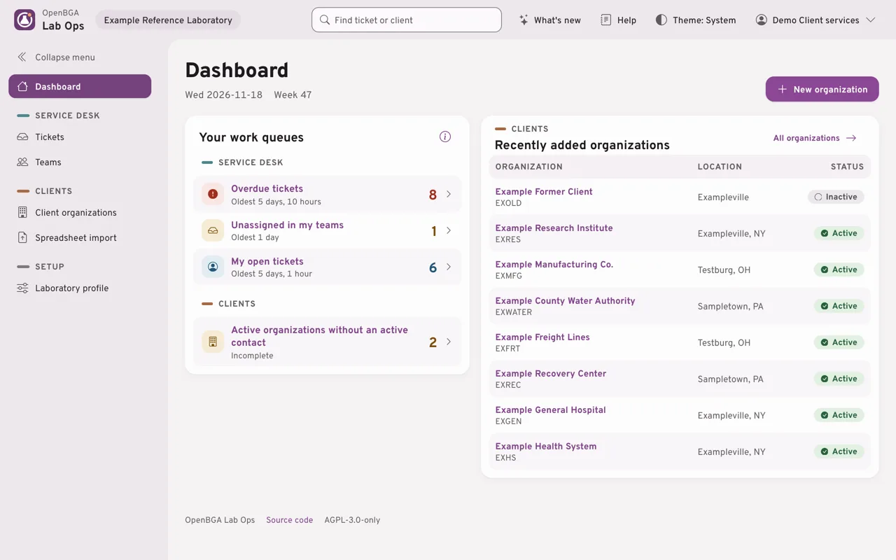
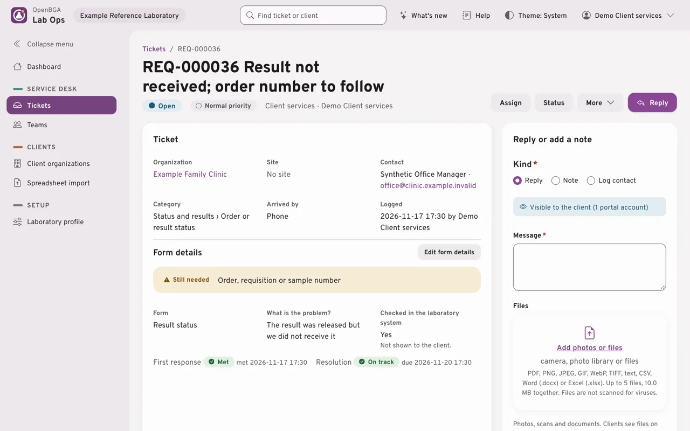
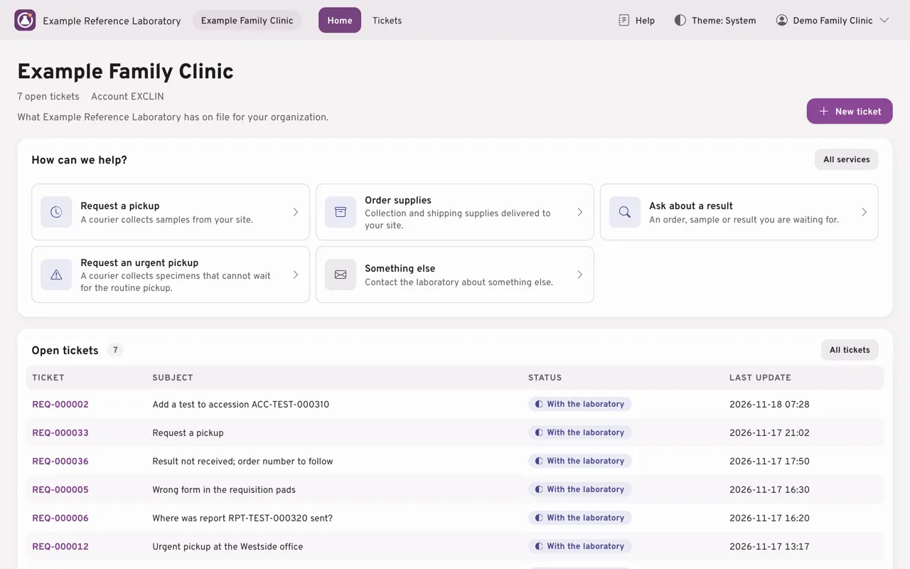

Client requests, from intake to resolution.
OpenBGA Lab Ops is a free, open-source client service desk for laboratories.
Staff track questions, complaints, pickups and supply orders in one ticket queue. Clients use a portal to open tickets, reply to their laboratory and follow work for their organization or sites. Each deployment serves one laboratory.
AGPL-3.0-only · No committed release dates


One queue for
every client request.
A ticket can concern an organization, a site, a contact or an internal issue. Testing, result reporting and billing stay in the laboratory's own systems.
Intake
A client raises a ticket in the portal, or staff log a call or walk-in. Each ticket gets a permanent number.
Route
A category proposes a priority and team. Staff assign the ticket to a member of that team.
Work
Send client-visible replies, keep internal notes, log calls and attach files. Mark when the laboratory is waiting on the client or a third party.
Resolve
Record a resolution summary, then close. A complaint closes only after review by a supervisor independent of it.
What laboratory
staff can do.
The staff desk brings client records, tickets, service requests and service targets together. Roles and explicit permissions decide who sees and changes what.
- Service desk
- Route tickets to teams and staff. Record calls, send client-visible replies, attach files and keep internal notes. Filter work queues, save views and review complaints.
- Client records
- Manage organizations, sites, contacts and portal access. Preview CSV imports and see each client's ticket history.
- Service requests
- Offer pickup, supply order and other forms through the portal. Configure required fields and orderable items.
- Targets and references
- Measure first response and resolution on the lab's business calendar. Link tickets to orders, samples and reports in existing systems.
- Quality records
- Optionally record nonconformances with containment, impact on reported results, root cause, actions, an effectiveness check and independent closing. Open one from a complaint.
- Administration
- Set up roles, account permissions, announcements and the lab's contact details. Review attributed changes in the audit history.
A ticket
Everything about a request on one page.
A ticket shows its organization, contact, category and how it arrived, the form details still needed, and its first-response and resolution clocks. Staff choose whether an entry is a reply the client sees, an internal note or a logged contact.

Client portal
What clients can do in the portal.
- Choose a service, such as a pickup or a supply order, or open a ticket about another topic.
- See the status, the conversation and the form details, files and references the laboratory shares.
- Reply to the laboratory. A reply to a resolved ticket, or one waiting for the client, returns it to the laboratory.
- Follow tickets for their organization or the sites assigned to their account, from a phone or desktop.
- Start a request again from an earlier ticket, with eligible answers copied.

Try the public demo.
The public demo has example records for a reference laboratory. Its sign-in page lists shared accounts and a password. Choose demo_client_services to work the staff queue or demo_client to see the same desk from a clinic's portal.
Use synthetic data only. The demo resets daily.
Run it
yourself.
With Docker Compose installed, these commands start the application and PostgreSQL on your machine's loopback interface and load the same synthetic records. This configuration is for evaluation.
git clone https://github.com/openbga/lab-ops.git
cd lab-ops
docker compose --profile app up --build --wait
# Type a password of at least 12 characters and press Enter.
read -rs DEMO_PASSWORD
export DEMO_PASSWORD
docker compose --profile app exec -e DEMO_PASSWORD web \
python manage.py seed_demo
unset DEMO_PASSWORDThen open http://127.0.0.1:8000 and sign in as demo_client_services, demo_client or another demo account with the password you chose.
What comes next.
The order may change as laboratories use the software, and there are no committed release dates. Planned quality modules would be optional, and the desk would continue to work on its own.
| Planned work | What it would add |
|---|---|
| Scheduled jobs and a notification outbox | Delivery retries, service clock breach notices and an optional interval for automatically closing resolved tickets. |
| Email channel | Send replies by email and receive messages through a provider webhook, associating a verified reply with its ticket. |
| Sign-off and controlled documents | Versioned documents, approval, effective dates, review dates and an attributed sign-off. |
| Read-and-acknowledge and training records | Assign a particular document version to people or teams and record training attendance and acknowledgement. |
Project and support.
OpenBGA Lab Ops is part of OpenBGA and an open-source project of BGASoft, a laboratory software company. It is maintained in openbga/lab-ops and built with Django and PostgreSQL.
There is no licence fee and no per-user pricing. The source is published under AGPL-3.0-only, so anyone may use, study, change and share it under that licence. The software is provided as is, with no support commitment: issues and pull requests are answered on a best-effort basis. BGASoft offers optional paid hosting, support and implementation through OpenBGA and open-source support.
Read the documentation Product scope Contribute Security policy